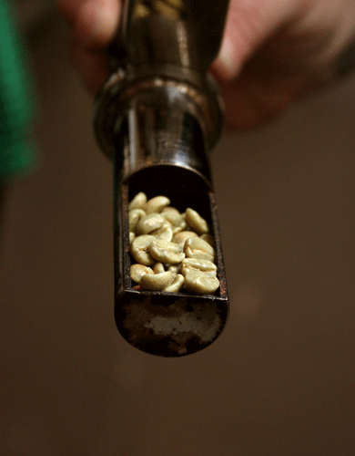
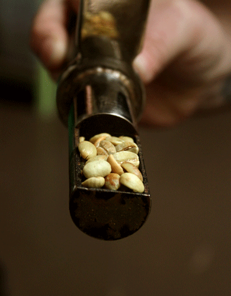
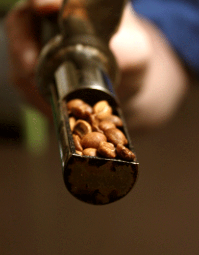
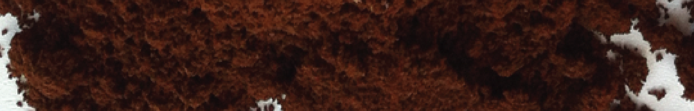
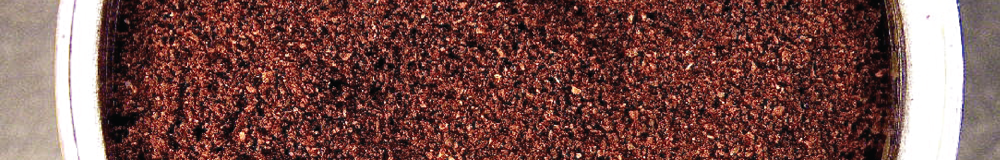
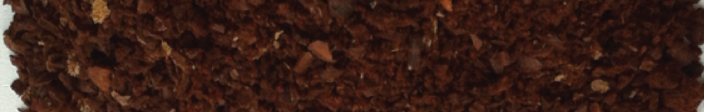

The concoction of the perfect cup of coffee is nothing short of cerebral. Between balancing chemicals, temperatures and water levels, the best baristas must be dilligent throughout the entire preparation process. The science behind the ideal brew starts with the raw bean, grown on a distant farm, and doesn't end until the first sip - a process much more intricate than it may seem.
By: Kimberly Alters, Roshan Nebhrajani, Shelly Tan, Lisa Xia
The mad scientists behind these caffeinated creations - mad baristas, if you will - need to work with quality ingredients to perfect their product. In this case, it all starts with the raw coffee beans.
So, how can you assess the quality of a bean? Ultimately, you're looking for beans that are clean, well-processed and picked at the height of ripeness. Single origin beans yield the highest quality coffee, says James McLaughlin, director of green coffee at Intelligentsia Coffee. These beans come from a single farm and are more expensive than blends - take the Geisha bean, which sells for $80 per pound. Single-origin coffee results in more specific flavor profile, one unique to the region and roasting method chosen, while blended beans yield a more general taste. This is because the many variables that contribute to taste are easier to manipulate and direct to a particular taste when there is only one region, washing style and roasting method in the brewing process. Nonetheless, many specialty roasters still use blender-quality beans like the Canopy, to target consumers who prefer a more traditional coffee taste for their morning cup.
After being picked, beans are often classified according to growing region. Once the region is selected, the real art in bringing out the bean's flavor emerges during the processing of the bean, according to Kornman.
As a whole, most beans are either dry processed or wet processed. While dry processing leaves the full body of the coffee cherry intact, wet processing removes the coffee cherry before processing. The latter method - also known as washing - is more popular when dealing with gourmet coffees because it yields a more balanced and less acidic taste. Dry processing, on the other hand, yields a smoother and heavier taste. In light of these processing differences, Kornman says, choosing your bean all boils down to personal preference.
The selected method of processing, however, is dependent upon the bean's region. For example, Central American beans are usually wet processed or washed, while Brazilian beans are almost never fully washed.
There are several factors that play into how you decide what region is right for you. Think about the type of taste you want and ask yourself these questions: Do you want a bold or a mild taste? Do you like something with a more full body or something more acidic? Are you interested in a fruity taste?
Keep these questions in mind as you peruse the particular flavor profile and processing of the beans from the four most commonly grown regions.
Click regions for more info


Once the green coffee beans have been washed, bagged and shipped, roasting them is the first step to creating the perfect coffee flavor.
Beans grown in different regions and under different conditions come bearing certain inherent flavors. It's up to the roaster to know about the beans' origins and to tailor the roasting to extract specific flavors.
As the master roaster at Bow Truss Roasting Works in Chicago's Lakeview neighborhood, Dennis Jackson roasts about 15 batches of coffee per day. He uses a drum roaster, which is a large cylindrical steel machine. Roasters come in various sizes - while Jackson uses a 12-kilo roaster for his work at Bow Truss, roasters at major warehouses like Intelligentsia can hold up to 90 kilos of coffee.
As the roaster, Jackson pours the green beans into a large funnel fixated on the top of the drum. After the raw beans are dumped inside, they are continually rotated by a series of automatically spinning paddles. The first step, Jackson says, is heating the drum. "It's like pre-heating an oven - you never want to start with a cold drum,” he says. This way all of the beans are heating up at a uniform temperature so that you can easily measure the pace of the moisture transfer.
Once the drum is at the appropriate temperature, Jackson drops the beans inside. Immediately, the drum starts rotating, keeping the beans moving and triggering airflow. Because the roasting process is incredibly precise, Jackson uses the built-in timer and thermometer on his roaster to measure his pace and heat.
Jackson says the coffee still has about 9 percent moisture and will continue absorbing heat throughout its first minute of roasting. The temperature inside the roaster, initially at around 420 degrees Fahrenheit, drops as a result. "If the beans absorb the heat too fast, the outside of the coffee can actually be compromised," he says. "The inside of the coffee will still be hard."
It is important to roast each bean with regards to its moisture content, which will uniformly transforming a soft, green bean into a hard, brown one. If the moisture transfer happens too fast, the outside may still be soft while the inside is hard or vice versa.
Once the temperature inside the drum drops below 165 degrees, the chemical reactions, for the most part, cease. The coffee is still absorbing some heat and gently releasing some moisture, Jackson says. To get the reactions going again, Jackson cranks up the heat once more. As the beans continue to release moisture, he increases airflow to the drum, which fans the flame inside and raises the internal temperature. Jackson lets the temperature continue to rise well past the 165-degree mark.
"I can do a lot with the air and the flame," he says. "I can build body with the air. I can take body out of it. I can build acidity or I can take acidity out. I can build sweetness. All that stuff plays into [the flavor of the coffee]."
As the roast continues, the beans turn a bit opaque. Jackson says this is a sign that they're taking on heat well. The next step is evaluating the aroma from the beans; at this first stage, there is a "vegetal, green pea-type of smell," he says. He continues to increase the temperature until the drum reaches 270 degrees Fahrenheit, the point at which all of the coffee's free moisture - the moisture outside of the cell itself - is gone, and the beans start to tan in color.
The next step is what Jackson refers to as "the golden point." At this stage, the roasting beans smell a bit like baking bread. To prevent them from burning, Jackson increases the airflow and keeps the beans circulating within the drum. He then cuts the flame completely, throwing the beans into an exothermic condition, which means they have their own heat energy. Carbon dioxide is released, and Jackson says it is important to keep the drum moving at this point so that it doesn't stifle the roast.
"Right now, you can smell some of the acidity, but you also smell the sweetness. I'm trying to develop the sugars. The sugars are browning," he says. "I don't want to go too fast, so I slow the roast down [by increasing airflow and turning the flame off]."
Because the roast is now an exothermic process, the beans will keep cooking despite the lack of flame, Jackson says. The last step is to increase the airflow just slightly to eliminate any smokey flavor and develop the body, he says. He then lets the beans out of the roaster to cool.
While the roasting process is very holistic in its effect on the taste of the beans, certain aspects can manipulate certain taste profiles. For example, if the flame is too high inside the roaster, the outside of the bean will char, resulting in a burnt, bitter flavor, Jackson says.
Additionally, dramatically increasing airflow could completely remove the acidic notes from the beans. "If you've got a ton of airflow moving through the coffee, it literally knocks [the flavors] off and what you have is a bland, flat coffee. It also knocks out some of the body just because there's too much momentum and the coffee never gets a chance to really roast. It's more baked, if that makes sense," he says.
The roasting process is very much a product of time, patience and developed expertise. "Drum roasters take a long time to learn because there are so many aspects that you can manipulate to get the things you want out of the coffee," Jackson says. "Air manipulation, flame manipulation, your time - it all plays into what you want to do with the coffee." Jackson learned how to roast coffee about 13 years ago, after apprenticing under another coffee roaster. Now, he roasts solo. "Usually, when I'm just roasting, I'm by myself. I'm checking it constantly, I'm smelling it," Jackson says. His method usually begins with weighing the beans so that he can accurately measure the bean's moisture loss before and after the roast.
Each bean is unique, so there is no one size fits all recipe for roast times and levels. This means it requires constant monitoring and frequent smelling of the beans as they roast to make sure the correct taste is being produced in that specific bean.
The Roast Levels
The beans progress through various roast levels during the process, Jackson says. Additionally, the beans follow a roasting curve, which changes according to elapsed time and temperature during the process, so roasters have an idea of the bean's ideal trajectory.
Two major, audible hints signal progress during the roasting process: the first-crack and the second-crack. When the beans are heated and start to expand, they make an audible cracking sound. At the sound of the first crack, the beans are at a drinkable light roast level, but for a deeper, darker roast, wait for the sound of the second crack. While some roasts are generally more popular, several options exist for the discerning drinker.

Cinnamon Roast
"There's cinnamon roast, which is very light. Cinnamon roast isn't used very commonly. It was used back in the late 1800s, early 1900s when they began canning coffee for major production. It's too sour really, there's not much flavor. So they took lower grown coffee, just roasted them very quickly, and made a lot of money," Jackson says.

City, City-Plus and Full City
"After cinnamon...once it's past first-crack, it's called city," Jackson says. "Then there's city-plus, which is just a little bit [after] first-crack. Full city goes into second crack."

The Dark Roasts
"Vienna roast is just past second-crack. Then [comes] French, then I believe there's one past there called Italian, which is just burnt. It's burnt. It's very bitter," Jackson says.
After the beans are roasted, the next step is to grind them to the desired fineness. But be careful turning that dial: Grind fineness greatly influences your brew.
Baristas call finding the perfect grind setting "dialing in," and it's important to choose the right fineness for your desired brew. "It affects how much flavor you can taste and what there is to taste, either positive or negative," says Jeffery Batchelder, a barista trainer at Intelligentsia. This is because the grind determines how much surface area of the bean is exposed, so finer grinds like espresso are generally stronger while coarser grinds are more mild.
Adjusting your grind setting also affects how the coffee extracts, meaning what percentage of the grounds are dissolved in water. "There's a small window that you want to aim for when you're extracting, and that's between 18 and 22 percent of the coffee dissolving," Batchelder says. "If it tastes sour, you haven't hit that 18 percent yet. If it tastes really bitter, or really savory and astringent, you probably went over 22 percent." The ideal, he says, is when the flavor is delicately balanced. "Whenever it tastes sour, but kind of sweet, and also [has] a little bit of bitterness to round everything out - that's probably right in the mark."
How to brew the coffee depends on the grind setting, because the ideal extraction percentage is the same no matter the grind. For example, with a fine grind, you'll have a shorter brew time with higher temperature water, whereas with a coarse grind you'll need to leave the coffee steeping for longer. Again, it's all about getting in between that 18 and 22 percent extraction range for the grind you're working with. If you let the fine grind brew for the same amount of time as that coarse grind, you'll go over 22 percent extraction and get a bitter taste; if you brew the coarse grind for the same amount of time as a fine grind, your coffee will taste sour.
Batchelder says "dialing in" is an arbitrary art, especially because the grind setting options change with every machine. Because there are no universal metrics for each grind, it can be difficult to determine grind setting.
The best tool to use in choosing a grind setting, then, is simply expertise. "I look at it and I feel it. I can tell by feeling it - where I need to go, whether [it needs to be] coarser or finer," says Brian Frain, premier barista trainer and wholesale operations manager at Bow Truss. "It's really hard to tell someone, 'Oh, just use medium grind,' so I'll usually send them home with a grind sample," he says. "I don't know what their grinder looks like, I don't know how many settings it has, so I'll say, 'This is what it should look like.'"
Frain's best piece of advice to new brewers is to literally lay their grinds out in a spectrum. He tells customers to get a blank piece of paper and trail out the sample he gives them. Then, they can grind their coffee, put it next to the sample on the piece of paper and compare the two. "I know that's not an exact science," Frain says. "but that's really what we do."
Ultimately, the easiest way to think of grind settings is in terms of the amount of coffee you want to brew, Frain says. If you're brewing less, then you'll want a little finer grind. But if you're brewing more, a slightly coarser setting works best.

Espresso
The Espresso grind setting is the finest grind setting that is actually used commonly. Naturally, this setting is ideal for those using a stovetop espresso maker, and usually yields about 1.25-1.75 oz of espresso.

Fine
The finest grind used for average drip coffee, this grind size is suitable for your typical 8-oz cup.
Medium
Generally, medium grind coffees work well with a Mr. Coffee at home, as well as a pour-over or ChemEx brewing method.

Coarse
Finally, a coarser grind works well with a French press. Because there's so much more coffee and the filter is so much bigger, you have to grind the coffee a little bit coarser. Otherwise it'll overflow the basket.
Once you've got your grinds, you need to add water - and temperature and dosage both affect your beverage's depth of flavor.
Temperature
With the pour-over method, water temperature is an important factor in determining the beverage's depth of flavor, says Dr. Shelby Hatch, a lecturer in the chemistry department at Northwestern University. "Water that's too cold might not extract enough of the beans' intricacies when it is poured over. Chemical reactions take place very slowly at cold temperatures, and extraction is a chemical process," she says. "If something isn't very soluble in cold water, it won't get extracted into [the coffee]."
Hatch, who conducted extensive research on the chemistry of coffee brewing, worked with a student research assistant to test various variables. The student's notes confirmed Hatch's hypotheses. "If you look at her notes, you'll see that as the temperature goes down, you're not able to really extract much of the compounds into the water. Caffeine is really soluble in water, so it's easy to extract that, but some of the other compounds are not [present]," she says. "If you don't have the water hot enough, you're going to get a more bitter tasting coffee because you're just going to be pulling out the caffeine, not the oils and other things that are less soluble in water."
Conversely, water that is too hot might ruin any delicate flavors in the coffee that were developed through the roasting and grinding process. "You don't want to use boiling water because it will extract flavors you don't want," Hatch says. For the Chemex method, she uses water that is heated to 94.6 degrees Fahrenheit.
Dosage
The dosage of water in coffee is an integral factor in the brewing process. Dosage refers to the ratio of coffee grinds to water, most often and most accurately measured during the pour-over method by placing the container directly onto a scale. Brian Frain of Bow Truss says he alters his dosage based on both the portion size of the coffee and the coffee bean itself. "My base spec for a 12-ounce cup of coffee is 28 grams of coffee, and we pour to a total of 415 grams of water weight," Frain says. "For an 8-ounce cup, it's 19 or 20 grams of coffee for 295 grams of water." Frain's ratios pretty consistently amount to about 6 percent coffee to about 94 percent water.
6% coffee
94% water
There are more than 20 different ways to transform ground coffee into a deliciously drinkable cup of joe.
Some methods, like a pour-over, use a filter to siphon out oils and residual grind from the brewed cup, while using a French press involves saturating the grinds directly with boiling water without a filter. Because grinds can pass through, this often results in a rougher texture, but the presence of grinds in the cup can actually make for a stronger and bolder taste in the coffee.
Whether to use a filter depends both on your brew method and overall personal preference for the texture of your drink. "In brewing a cup of coffee, you have a set of variables," Frain says. "My job is to eliminate every single problem I can [so that] I'm left with a hopefully perfect cup of coffee," he says. The pour-over method is the easiest and most common method for manually brewing coffee, as it only requires either a V60 dripper (for a single cup) or a Chemex pot. A V60 dripper is a portable cone-shaped device with a small hole on the bottom through which the coffee drips, and it can be placed directly on top of a mug for easy preparation. A Chemex, on the other hand, is a larger flask with a cone-shaped top and a rounded bottom. A filter is placed inside the cone on top of the flask, and the coffee drips directly into the bottom half of the container.
After you've chosen your preferred method and acquired a filter, the next step is to fill a kettle with boiling water. The kettle must have a long and narrow spout to ensure precise and controlled pouring - a key factor in coffee preparation, as even saturation of the grinds is crucial.
There are three main steps to the pour-over process:
Step One: Wet the filter
Completely saturate the paper filter using boiling water, to the point that the filter sticks to the edges of the cone. The water will drip into the container, pre-heating it, while simultaneously eliminating any paper taste from the filter that would otherwise contaminate the coffee's flavor. Once you've done that, pour out the residual water left in the cup. If you don't do this, your dosage ratio will be thrown off and your taste, slightly diluted.
Step Two: Pre-Infusion
This step, also called "blooming," lasts about one minute but is crucial to proper preparation. First, pour the freshly ground coffee into the wet filter, then slowly and evenly pour the water over the coffee to completely saturate the grounds. The coffee will begin to bubble - the result of carbon dioxide gas escaping from the grounds. This carbon dioxide was created during the roasting process, so the fresher the roast, the more carbon dioxide will be released.
Step Three: Spiral pouring
Once you've released the carbon dioxide from the grinds (so they've stopped bubbling), slowly pour water over the grounds in a circular motion. As the water drips through the beans and into the flask below, the bed of brewed coffee will continue to fall. Continue to pour in a spiral motion, maintain a consistent height of liquid within the filter. As the water extracts from the coffee, the grinds left in the filter should be an inverted cone shape - this is the tell-tale sign that you've extracted evenly.
To fully appreciate the complexities of the flavors in the final product, slurp it.
While it's not graceful, it is effective. Grab a spoon and scoop up bit of liquid. Using circular breathing, which allows you to breathe through your nose and mouth simultaneously, try to smell and taste the coffee at the same time. Frain says this method of tasting allows him to "pull in all of the flavor nodes from the coffee."
Of course, if you're just trying to have a casual sip and get your required caffeine buzz, you can just sip the coffee normally. Keep in mind that the volatile compounds in the cup will keep reacting with the oxygen, which alters the taste of the coffee as it cools, so best practice is to drink up within 20 minutes of brewing your coffee.